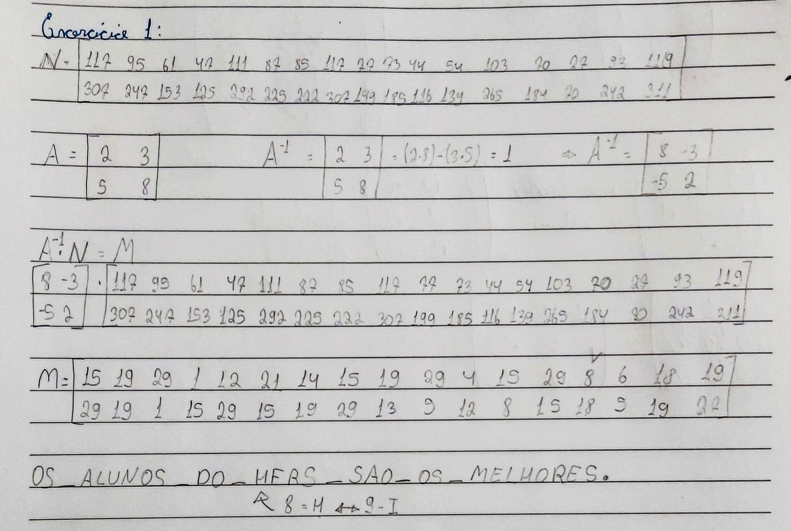

Criptografia com matrizes é uma forma de guardar mensagens secretas, transformando a mensagem em uma matriz seguindo uma tabela, e codificando essa mensagem com uma matriz codificadora, para isso deve-se multiplicar a matriz codificadora pela matriz da mensagem, conseguindo então uma nova matriz que contém a mensagem criptografada.
Para decodificar, utilizamos a matriz inversa da matriz codificadora e multiplicando-a pela mensagem codificada, isso gera a nova matriz que é uma matriz que é a mensagem.
